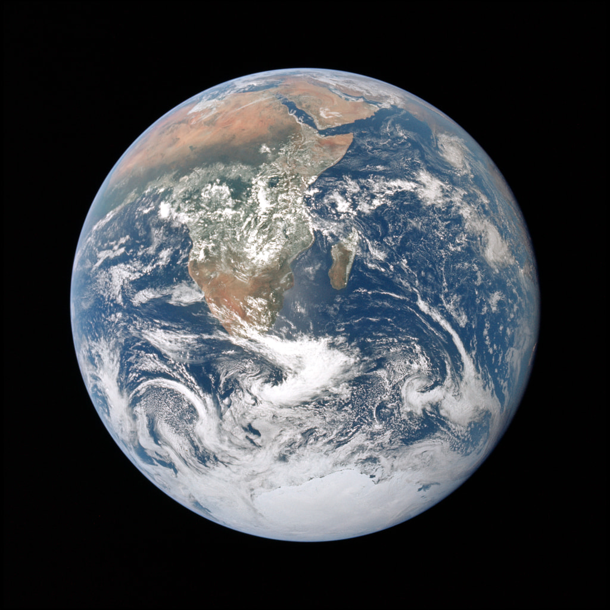
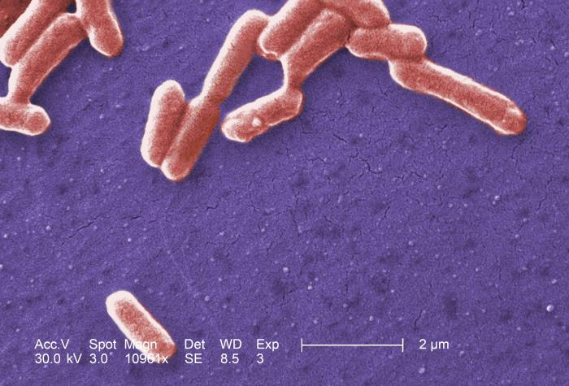

科學記數法
為甚麼要用科學記數法？
從行星到細菌，真實世界的尺寸可以相差極大。統一用「米」表示時，數字就會出現一長串零；逐個數零，既費時，也容易讀錯或抄錯。

行星：地球的赤道直徑
約 12,756 km；換成米：
12,756,000 m
= 1.2756 × 107 m
照片：NASA／阿波羅 17 號。直徑：NASA 地球資料。

細菌：大腸桿菌的長度
以典型長度約 2 μm 作例子；換成米：
0.000002 m
= 2 × 10−6 m
影像：CDC 免費影像庫／Janice Haney Carr，PHIL #10071，人工染色。長度參考：細菌研究論文。
1 km = 1,000 m；1 μm = 0.000001 m（微米）。
兩張圖片並非同一比例。尺寸是約值；大腸桿菌長度會因菌株及生長狀態而異，2 微米不是圖中每一條細菌的量度值。上面的等號只表示同一數值換寫後不變。
- 寫得簡短，較容易讀寫。不用反覆數一長串零，能減少漏寫零或放錯小數點的機會。
- 看清數字有多大或多小。用 10 的次冪指出尺度，就容易看出是幾千萬米，還是百萬分之幾米。
- 方便比較，也方便計算。把數字寫成同一種形式，可以比較它們的尺度；涉及很大或很小的數相乘時，也可利用 10 的冪來整理計算。
科學記數法改變的只是寫法，不是數值；不必為了寫短一點而四捨五入。
怎樣寫短一點，又不改變數值？
用一個簡短的數，乘以 10 的整數次冪。這就是科學記數法，亦稱標準形式。
- a
- 係數：小數點前只有一個非零數字。
- n
- 指數：可以是正整數、負整數或 0。
開首的兩個數，現在怎樣寫？
12,756,000 m = 1.2756 × 107 m
0.000002 m = 2 × 10−6 m
單位同樣是米：地球的尺寸用正指數；細菌的尺寸用負指數。係數保留數字，10 的冪指出尺度。
若是負數，條件改為 1 ≤ |a| < 10；例如 −320 = −3.2 × 102。
零就寫成 0：它沒有符合上述係數條件的標準形式。
哪些是標準形式？
小數點移了，指數怎樣補回？
普通數字 → 標準形式：先找出介乎 1（包括）與 10（不包括）的係數，再用 10 的冪還原原數。
小數點移到哪裏，才是標準形式？
保持原數值不變：小數點移動，係數和指數一起改。
原數值（米）
淡色零在目前的係數中可省略；沒有刪去數值。
32,400 變成 3.24 後，怎樣還原？
小數點向左移 4 位得到係數 3.24；乘以 104 還原。
32,400 = 3.24 × 104
0.00324 變成 3.24 後呢？
小數點向右移 3 位得到係數 3.24；乘以 10−3 縮回原數。
0.00324 = 3.24 × 10−3
反過來讀，怎樣寫回普通數字？
從係數開始：正指數向右移，負指數向左移；不夠位就補零。指數是 0 時，數值等於係數。
6.02 × 103 = 6,020
6.02 × 10−3 = 0.00602
6.02 × 100 = 6.02
再看兩個例子
1,000 = 1 × 103
0.00009 = 9 × 10−5
原數 ≥ 10：正指數；原數在 1 至 10 之間（不包括 10）：零指數；原數在 0 與 1 之間：負指數。
負指數，是否代表負數？
不是。10 的任何整數次冪都是正數。負指數代表倒數，不是負號。
= 0.001負指數：縮小
固定係數後，指數每增加 1，數值就變為原來的 10 倍；每減少 1，就變為原來的十分之一。
保持係數不變，數字會走到哪一格？
留意個位右邊的小數點：位值固定，數字移位。
數值相同，就一定是標準形式嗎？
不一定。除了數值正確，係數也要符合範圍。改係數時，指數必須一起調整。
把算式修正成標準形式。
係數縮小至十分之一，10 的冪就放大 10 倍。
32.4 × 103
= (3.24 × 10) × 103
= 3.24 × 104
係數 × 10 ⇔ 指數 − 1；係數 × 110 ⇔ 指數 + 1
數值是 32,400，但 32.4 ≥ 10，所以未寫成標準形式。
正確標準形式負指數要縮小，不是放大。由 3.24 向左移 3 位。
正確等式係數放大 10 倍，指數應減 1，才能保持原數。
正確等式記數法是否一定要四捨五入？
不必。科學記數法只改寫法，不要求近似值或指定有效數字。
12,345 = 1.2345 × 104
這是精確的等式；若題目另要求取三位有效數字，才寫成近似值 1.23 × 104。
9.8 和 1.2，是否已經足夠判斷？
比較正數前，先確認兩個數都已寫成標準形式。
- 先比較指數：較大指數的數較大。9.8 × 10−4 < 1.2 × 10−3
- 指數相同，才比較係數。6.4 × 105 > 2.9 × 105
用普通數字驗算一次。
9.8 × 10−4 = 0.00098
1.2 × 10−3 = 0.0012
所以 0.00098 < 0.0012；不要被較大的係數誤導。